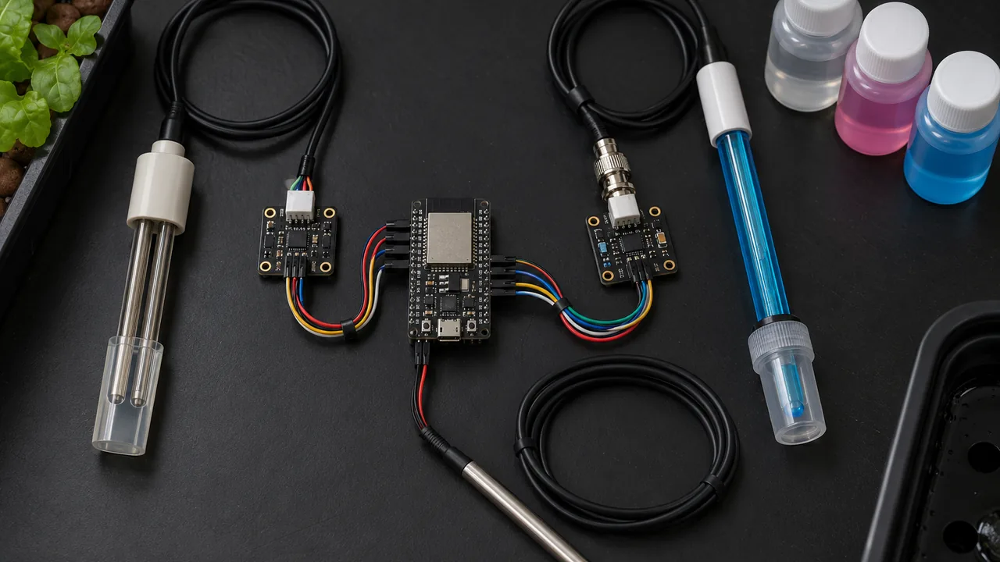
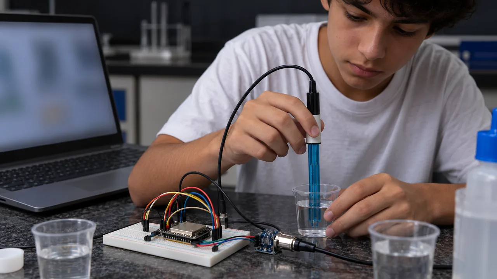
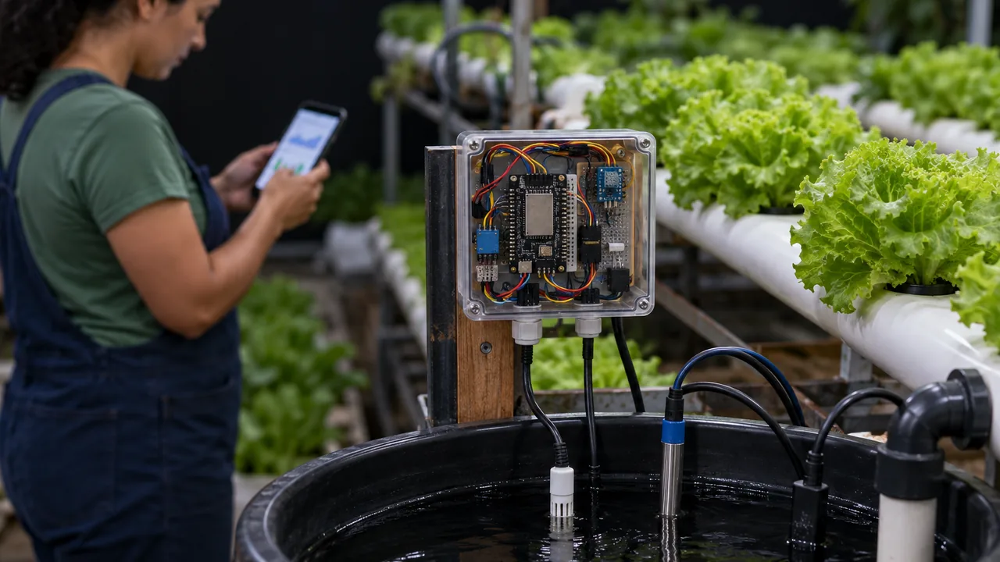

Solução 3 · Nutrientes
Solução 3 · Nutrientes
Saiba o que falta na água da sua hidroponia
Duas sondas medem os sais dissolvidos (TDS/EC) e o pH da solução nutritiva. O ESP32 corrige a leitura pela temperatura e mostra no celular se está dentro da faixa. A IA explica em português o que ajustar. Serve para quem cultiva alface, rúcula ou morango em hidroponia.
Como funciona
Mede, corrige, compara, explica
A planta na hidroponia come o que está dissolvido na água. O sensor TDS mede quantos sais tem ali: mais sais, mais corrente passa entre os dois pinos da sonda. Como a água quente conduz mais, o DS18B20 mede a temperatura e o código corrige a conta para 25 °C. A sonda de pH mede se a água está ácida ou básica; fora da faixa, a raiz não consegue absorver parte dos nutrientes mesmo com eles na água.
Peças
Lista de compras

| Peça | Para que serve | Preço aprox. |
|---|---|---|
| ESP32 DevKit V1 (30 pinos) | O cérebro, com Wi-Fi | R$ 30–45 |
| Sensor TDS (Gravity, DFRobot ou genérico, com sonda) | Mede os sais dissolvidos; dele sai o EC | R$ 25–60 |
| Sensor de pH PH-4502C com sonda BNC | Mede se a água está ácida ou básica | R$ 70–130 |
| DS18B20 à prova d'água (com cabo) | Temperatura da água, para corrigir o TDS | R$ 10–18 |
| Solução tampão pH 4,00 e pH 6,86 (sachês) | Calibrar a sonda de pH | R$ 10–25 |
| Resistores 3× 10 kΩ e 1× 4,7 kΩ, protoboard e jumpers | Divisor de tensão do pH (dois de 10 kΩ em série fazem 20 kΩ) e pull-up do DS18B20 | R$ 12–20 |
| Total | R$ 150–300 |
Preços aproximados de loja online brasileira em outubro de 2026, a conferir antes de comprar. Não inclui o sistema de hidroponia nem caixa de acabamento. O ESP32 liga no cabo USB de um carregador de celular.
Ligação
O circuito, pino por pino
| Componente | Pino do componente | Liga no ESP32 |
|---|---|---|
| Sensor TDS | + (VCC) · − (GND) · A | 3V3 · GND · GPIO 35 |
| DS18B20 | vermelho (VCC) · preto (GND) · amarelo (DATA) | 3V3 · GND · GPIO 4 (resistor 4,7 kΩ entre DATA e 3V3) |
| pH PH-4502C | V+ · G · Po | VIN (5 V do USB) · GND · Po → 10 kΩ → GPIO 32, e 20 kΩ do GPIO 32 ao GND |
Passo a passo
Da caixa à primeira leitura confiável

- Prepare a Arduino IDE. Instale a Arduino IDE 2 e, em Gerenciador de Placas, "esp32" (Espressif). Em Bibliotecas, instale "OneWire" e "DallasTemperature" (Miles Burton).
- Teste a placa sozinha. Escolha "ESP32 Dev Module" e a porta, grave o exemplo Blink. Se não gravar, segure o botão BOOT quando aparecer "Connecting...".
- Ligue o DS18B20 e o TDS. Siga a tabela. Grave o código e confira no Monitor Serial (115200) se a temperatura da água aparece. Se der −127, falta o resistor de 4,7 kΩ ou o fio amarelo está solto.
- Monte o divisor do pH na protoboard antes de ligar o módulo. Para testar, ligue a ponta de cima do divisor (onde vai o Po) no VIN e meça o meio com multímetro: tem que marcar perto de 3,3 V. Depois troque o VIN pelo fio do Po.
- Calibre o pH. Lave a sonda em água destilada, coloque no tampão 6,86, espere 1 minuto e anote a tensão "pH V=" do Monitor Serial. Lave de novo, faça o mesmo no tampão 4,00. Troque
V_PH7eV_PH4no código e grave. - Confira o TDS. Se tiver uma caneta medidora de TDS/EC, meça a mesma água e compare. Se a diferença for constante, ajuste o fator
K_TDS. - Meça a solução nutritiva, uma sonda de cada vez. Primeiro o TDS, tire a sonda, depois o pH. Abra o IP do Monitor Serial no celular, na mesma rede Wi-Fi.
Código
Arduino IDE para ESP32
Troque o nome e a senha da rede e as duas tensões de calibração. A faixa da cultura fica nas quatro linhas de EC_MIN a PH_MAX.
// Nutrientes (TDS/EC + pH) — ESP32
// Bibliotecas: "OneWire" e
// "DallasTemperature" (Miles Burton)
#include <WiFi.h>
#include <WebServer.h>
#include <OneWire.h>
#include <DallasTemperature.h>
const char* REDE = "NOME_DA_REDE";
const char* SENHA = "SENHA_DA_REDE";
// GPIO 35: sinal A do sensor TDS
const int PINO_TDS = 35;
// GPIO 32: pH, no meio do divisor
const int PINO_PH = 32;
// GPIO 4: DS18B20 (4,7k para o 3V3)
const int PINO_TEMP = 4;
// Calibração do pH: tensão do Po (já
// multiplicada por 1,5) em cada tampão
float V_PH7 = 2.50; // tampão 6,86
float V_PH4 = 3.05; // tampão 4,00
// Ajuste fino do TDS (1.0 = sem ajuste)
float K_TDS = 1.0;
// Faixa de referência comum da alface.
// Confira para a sua cultura.
const float EC_MIN = 1.2, EC_MAX = 1.8;
const float PH_MIN = 5.5, PH_MAX = 6.5;
OneWire fio(PINO_TEMP);
DallasTemperature termo(&fio);
WebServer servidor(80);
float temp = 25, tds = 0, ec = 0, ph = 7;
String aviso = "medindo";
unsigned long ultima = 0;
// média de 20 leituras, em volts
float volts(int pino) {
long soma = 0;
for (int i = 0; i < 20; i++) {
soma += analogReadMilliVolts(pino);
delay(10);
}
return soma / 20.0 / 1000.0;
}
void ler() {
termo.requestTemperatures();
float t = termo.getTempCByIndex(0);
// -127 = sensor desligado: usa 25 °C
temp = (t < -100) ? 25 : t;
// TDS: corrige para 25 °C (fórmula
// do fabricante DFRobot)
float coef = 1.0 + 0.02 * (temp - 25.0);
float v = volts(PINO_TDS) / coef;
tds = (133.42 * v * v * v
- 255.86 * v * v
+ 857.39 * v) * 0.5 * K_TDS;
// EC em mS/cm (ppm = EC µS/cm x 0,5)
ec = tds * 2.0 / 1000.0;
// pH: reta entre os dois tampões
float vph = volts(PINO_PH) * 1.5;
float a = (6.86 - 4.00) / (V_PH7 - V_PH4);
ph = 6.86 + (vph - V_PH7) * a;
aviso = "";
if (ph < PH_MIN) aviso += "pH baixo ";
if (ph > PH_MAX) aviso += "pH alto ";
if (ec < EC_MIN) aviso += "EC baixo";
if (ec > EC_MAX) aviso += "EC alto";
if (aviso == "") aviso = "ok";
Serial.printf("T=%.1f TDS=%.0f pH V=%.3f\n",
temp, tds, vph);
}
// /dados: JSON para o painel e para a IA
void dados() {
String j = "{\"temp\":" + String(temp, 1);
j += ",\"tds_ppm\":" + String(tds, 0);
j += ",\"ec_ms\":" + String(ec, 2);
j += ",\"ph\":" + String(ph, 2);
j += ",\"aviso\":\"" + aviso + "\"}";
servidor.send(200, "application/json", j);
}
// /: página que abre no celular
void painel() {
String h = "<meta name=viewport "
"content='width=device-width'>"
"<meta http-equiv=refresh content=5>";
h += "<h2>Hidroponia</h2><p>EC: " + String(ec, 2);
h += " mS/cm<br>pH: " + String(ph, 2);
h += "<br>Água: " + String(temp, 1) + " C";
h += "<br><b>" + aviso + "</b></p>";
servidor.send(200, "text/html", h);
}
void setup() {
Serial.begin(115200);
termo.begin();
WiFi.begin(REDE, SENHA);
while (WiFi.status() != WL_CONNECTED) {
delay(500);
Serial.print(".");
}
Serial.print("\nPainel em http://");
Serial.println(WiFi.localIP());
servidor.on("/", painel);
servidor.on("/dados", dados);
servidor.begin();
}
void loop() {
servidor.handleClient();
if (millis() - ultima < 3000) return;
ultima = millis();
ler();
}A camada de IA
O que a IA faz neste projeto
Explica o que corrigir
Recebe EC, pH, temperatura e a cultura, e responde: "o pH está em 7,1; acima da faixa da alface. Adicione redutor de pH aos poucos e meça de novo em 30 minutos".
Lê a semana
Na versão 2, guarde uma leitura por hora. A IA aponta o padrão: "o EC cai rápido depois do meio-dia, as plantas estão bebendo mais água do que sais".
Explica para o cliente
Transforma os números num recado curto em português para o produtor, que não precisa saber o que é µS/cm.
Script de pergunta, em Python, rodando no computador na mesma rede:
# pergunta.py — roda no computador,
# na mesma rede do ESP32
import json, urllib.request
# troque pelo IP do seu ESP32
URL = "http://192.168.0.50/dados"
dados = json.load(urllib.request.urlopen(URL))
cultura = input("Cultura (ex.: alface): ")
prompt = (
"Você ajuda um pequeno produtor de "
"hidroponia. Cultura: " + cultura + ". "
"Leitura agora: " + json.dumps(dados) + ". "
"ec_ms = EC em mS/cm, temp = °C da água. "
"Diga em português, em até 4 frases, se "
"EC e pH estão bons para essa cultura e "
"o que corrigir, um passo de cada vez."
)
print(prompt)
# Mande o prompt ao modelo que você usa:
# - cole no chat do serviço de IA; ou
# - use a biblioteca oficial do serviço,
# com a SUA chave numa variável de
# ambiente (nunca escrita no código); ou
# - rode um modelo local no PC, sem chave.Teste e melhore
Confira antes de mostrar para alguém
- A temperatura da água aparece e muda quando você segura a sonda na mão.
- No tampão 6,86 o pH marca entre 6,7 e 7,0; no tampão 4,00, entre 3,9 e 4,1.
- Água da torneira dá TDS baixo; a solução nutritiva dá bem mais.
- O TDS bate com uma caneta medidora (se tiver) com diferença pequena e constante.
- O aviso muda para "pH alto" quando você mede uma água fora da faixa.
| Erro comum | Causa provável | Como resolver |
|---|---|---|
| pH e TDS mudam quando as duas sondas estão na água | Uma sonda interfere na outra pela água | Meça uma de cada vez: tire uma sonda, ou na versão 2 ligue e desligue a alimentação de cada sensor |
| pH não sai do lugar ou anda devagar | Sonda de pH secou ou ficou guardada sem a tampa com líquido | Deixe a sonda de molho na solução de armazenamento (KCl) e recalibre |
| pH com valor absurdo (12, −3) | Sem calibrar, ou esqueceu de multiplicar por 1,5 a tensão do divisor | Refaça a calibração com os dois tampões e confira V_PH7 e V_PH4 |
| Temperatura −127 | Falta o resistor de 4,7 kΩ ou fio solto | Coloque o resistor entre DATA e 3V3 |
| Leitura analógica pula muito | Sensor em pino ADC2 ou fio longo solto | Use GPIO 32 a 39; o código já faz média de 20 leituras |
Caderno de testes. Cada vez que mudar alguma coisa, anote numa linha. A sonda de pH muda com o tempo; com o caderno você sabe de quanto em quanto tempo recalibrar.
| Data | Versão | O que mudou | Resultado |
|---|---|---|---|
| 20/10 | v1 | Duas sondas juntas na água | pH oscilando entre 5,8 e 6,9 |
| 21/10 | v2 | Uma sonda de cada vez | pH parado em 6,2 |
| … | v3 | Leitura por hora guardada e enviada à IA | Anote aqui |
Segurança
Água, eletrônica e produto químico
Ficha de negócio
Como vender o medidor de nutrientes

| Quem compra | Pequeno produtor de hidroponia, escola com horta hidropônica, loja de aquarismo e hidroponia que quer demonstrar ou revender |
| Custo do kit | R$ 150–300 (lista acima, a conferir) |
| Preço sugerido | R$ 400–650 o aparelho montado, calibrado, em caixa (sugestão) |
| Mão de obra | 2 horas para instalar, calibrar com os tampões no local, ajustar a faixa da cultura e ensinar a ler o painel |
| Assinatura opcional | R$ 20–40 por mês: recalibração do pH, relatório da semana e explicação da IA (sugestão). A sonda de pH se desgasta com o uso; deixe a troca prevista no preço |
| Argumento de economia | Faça a conta com o cliente: quantos pés tem uma bancada × preço de venda de cada pé = quanto ele perde se o pH sair da faixa e ninguém perceber. O aparelho mede o tempo todo, a caneta só quando alguém lembra |
Para ir além
Próximos passos
Para entender o que o modelo de IA faz com os dados, comece pelo curso IA do zero. Para controlar bombas dosadoras e sensores com mais precisão, siga para Robótica. Todos os cursos são abertos e gratuitos no INEMA.CLUB.